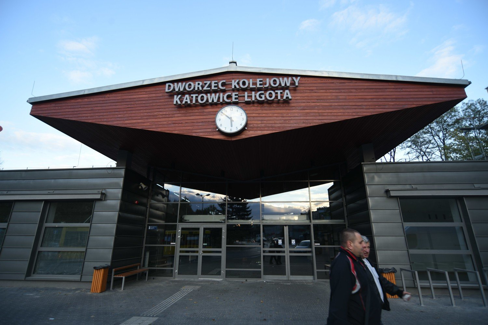

Ligota-Panewniki to duża dzielnica miasta Katowice w południowo-zachodniej części metropolii, obejmująca takie części jak: Ligota (Stara i Nowa), Panewniki (Stare i Nowe), Kokociniec, Wymysłów oraz Zadole.
Powierzchnia dzielnicy wynosi ok. 12,6 km², a liczba mieszkańców to około 30-33 tys. osób (różne źródła).
Charakter dzielnicy: przeważnie funkcja mieszkaniowa z usługami, ale występują także elementy przemysłowe, transportowe, rekreacyjne i zielone tereny leśne.
Nazwa Ligota pochodzi z dawnej polskiej nazwy „l gota”, co oznaczało wieś zwolnioną z podatków na pewien czas, stąd wiele miejsc na Śląsku nosi taką nazwę. W przypadku tej Ligoty pierwsza wzmianka pochodzi z roku 1360.
W XIX w. i na początku XX w. Ligota i Panewniki przeszły transformację: z rolniczych osad w części – dzięki kolei (linia kolejowa przez Ligotę w 1852 r.) oraz bliskości lasów – w miejsca bardziej miejskie i letniskowe.
W Ligocie znajduje się ciekawy przykład zabudowy willowej z okresu międzywojennego — osiedle urzędnicze/kolonia willowa, zaprojektowana w stylu modernistycznym-funkcjonalistycznym.
Dzielnica ma mocno rozwinięte tereny zielone i rekreacyjne — np. kompleks leśny Las Panewnicki (część Lasów Murckowskich) i dostęp do natury w granicach miasta.
Transport i komunikacja: w dzielnicy znajduje się m.in. Centrum Przesiadkowe Ligota — nowoczesny węzeł integrujący kolej, autobus i parking „Park & Ride”.
Zalety:
Bliskość natury – zielone obszary, lasy, możliwość spacerów-rowerów, co jest dużym plusem w miejskim otoczeniu.
Różnorodność zabudowy – od willi międzywojennych, przez starsze kamienice, po osiedla wielorodzinne – daje szansę na wybór stylu mieszkania.
Duża dzielnica – sporo infrastruktury: sklepy, usługi, edukacja, komunikacja – co może być wygodne.
Kwestie do uwzględnienia:
Ze względu na rozległość – warunki życia mogą się znacznie różnić w zależności od konkretnej części (np. części bliżej głównych ulic vs. przy lesie).
W części, gdzie zabudowa jest starsza lub wielorodzinna – mogą być większe wyzwania (np. stan techniczny, hałas uliczny, ruch).
Komunikacja:
choć jest centrum przesiadkowe, nie każda część dzielnicy może być równie dobrze skomunikowana z centrum miasta – dla osób dojeżdżających warto sprawdzić trasę.
Kto może być zainteresowany tą dzielnicą?
Osoby, które chcą mieszkać w Katowicach, ale z dostępem do terenów zielonych i spokojniejszej atmosfery niż śródmieście.
Rodziny, które szukają mieszkania lub domu w większej dzielnicy z dobrą infrastrukturą – szkoły, usługi, rekreacja.
Inwestorzy mieszkaniowi zainteresowani dzielnicą z historią i z potencjałem – zarówno mieszkania starsze wymagające remontu, jak i nowe inwestycje.
Miszel Traper to pseudonim artystyczny Miszel (rzeczywiste imię: Michał Łusiak) — polski raper/trap-artysta. Nazwę „Traper” wykorzystuje jako część swojego pseudonimu („Miszel Traper”).
Styl, co robi Działa głównie w nurcie trap / rap — teksty często dotyczą drogi „od dołu”, pracy nad sobą, krytyki branży muzycznej, życia w mieście. Przykład: w tekście „Trapokalipsa” mówi o branży, viralach i „podziemiu”. Jego piosenka „CAPSLOCK” ma wers „Miszel to jest traper” — sam siebie tak identyfikuje. Często nawiązuje do konkretnej dzielnicy – w tekście „Gdzie jest stary Miszel” pojawia się linia: „Ligota jest dumna, każdy poznał tę dzielnicę”.
Wybrane osiągnięcia i ciekawostki W 2022 roku wydał album No Case, który zadebiutował na 2. miejscu listy OLiS. Współpracował m.in. z Michał Wiśniewski w utworze „Traptosteron”. Na stronie sklepu „Traperhood” promuje wydawnictwo Czarny Koń (edycja klasyczna i królewska) — pokazuje, że buduje markę nie tylko muzycznie, ale i merchandisowo.
Dlaczego może być interesujący Reprezentuje scenę miejską i trap-rap w Polsce, więc jeśli interesujesz się taką muzyką — może być ciekawym odkryciem. Jego teksty mają osobisty charakter: opowiada o swoim pochodzeniu, o „blokach”, o swojej dzielnicy — co dodaje autentyczności. Łączy elementy mainstreamu (współprace, dobrze wypromowane wydawnictwa) z undergroundową atmosferą („podziemie”, „z bloku”).
Warto wiedzieć — uwagi Jego styl to zdecydowanie rap/trap — jeśli oczekujesz czegoś spokojnego albo akustycznego, to może nie do końca. W tekstach może pojawiać się mocny język, wulgaryzmy — typowe dla wielu współczesnych rap-utworów. Jak w przypadku wielu artystów z tej sceny – warto samemu przesłuchać kilka kawałków, żeby sprawdzić, czy jego „klimat” Ci odpowiada.